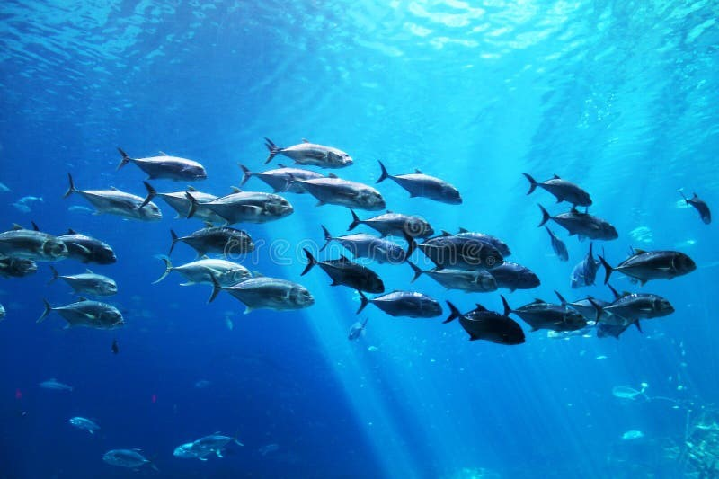
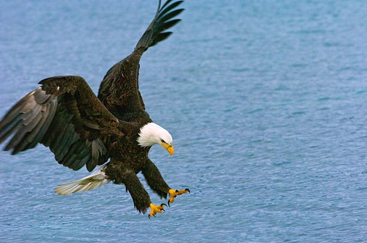

Ein glückliches Leben für Alles und Jeden!
Ich möchte mit meinem Blog bewirken dass wir Menschen symbiotischer und herzlicher mit den Tieren unseres Planeten in Umgang kommen.
Auch wir sind hier nur Gäste und müssen uns versuchen anpassen, jedoch nicht auf Kosten und Leid anderer. Das beziehe ich nicht nur auf andere Tiere, sondern auch auf andere Menschen.
Zu dem Thema Umgang mit anderen Menschen schauen Sie sich gerne diesen Blog an : hier Ich kann ihn jedem/jeder ans Herz legen der/die glücklicher und ausgeglichener durchs Leben gehen möchte.
Ich kann hier in diesem Blog niemanden überreden etwas zu tun, oder auch nicht zu tun. Ich möchte Ihnen lediglich die schönen und natürlichen Seiten der Welt zeigen, vielleicht tut Ihnen das ja gut. Wie sie damit umgehen werden, bleibt alleine Ihnen überlassen. Es gibt hier kein falsch oder richtig.
,,Alles kann, nichts muss“
Wir sind Ihnen ähnlicher als wir denken
Auf dem Landbereich wohnen seit mehr als 385 Millionen Jahren Tiere und Bakterien. Die Bakterien sind so mikroskopisch klein, dass wir sie mit unseren eigenen Augen bis heute nicht sehen können. Und doch sind sie immer noch da, klein wie ein Staubkorn, oder groß wie ein Elefant.
Wir teilen uns mit Ihnen unseren Lebensraum jeden Tag aufs neue. Sei es auch nur die kleine Fliege die uns im WEB-Unterricht nervt oder die Katze die auf uns zuhause wartet uns sich freut dass wir wieder da sind. Tiere sind ein Teil von uns Menschen und würden uns niemals was schlechtes wünschen.
Wir können sie auch als unser Helfer einsetzen, beispielsweise um mit einem Pferd schneller von Punkt A nach Punkt B zu kommen, oder auch einfach um den Wind der Natur in unseren Haaren zu spüren wenn dieses elegante Tier uns seine enorme Kraft und Schönheit anvertraut und uns damit hilft unser Leben besser zu bewältigen.
Schaut euch mal die Affen an: Sie ähneln uns so sehr, bewegen sich wie wir und in einem Experiment wurde sogar gezeigt dass Affen anfällig für das Rauchen sind!  .
.
Lasst uns versuchen gemeinsam mit den Tieren einen schönen Planeten zu erhalten, ohne Sie wären wir nämlich selber das Äquivalent zu einem Affen!
Die riesigen weiten des Meeres
Es gab schon lange Tiere im Meer, bevor das Landleben zu existieren angefangen hat. Aber es kann auch umgekehrt sein: Beispielweise stammen Wale von Landbewohnern ab, und zwar Huftieren. Wie das wohl damals von statten gegangen ist? Jedenfalls gibt es mehr als mehr als 30.000 Fischarten weltweit und die Erdoberfläche ist zu 71% von Meer bedeckt. Eigentlich unglaublich, wenn man darüber nachdenkt dass die Menschliche Spezies die Erde ,,beherrscht“, aber nichtmal ein Drittel dieser bewohnen kann und nach nichtmal einer Stunde auf dem offenen Meer keine Chance mehr hätte.
Frei wie ein Vogel
Stellt euch mal vor Ihr könntet fliegen: Ihr könntet frei die Lüfte erkunden und könntet alles von oben beobachten. Das ist wirklich eine Traumvorstellung. Schon damals träumten die Menschen davon fliegen zu können aber waren leider zu übermütig, so wie Ikarus. Heutzutage haben wir Flugzeuge und Helikopter, aber ist das wirklich vergleichbar mit dem Gefühl das ein Adler an der frischen Luft hat? Vielleicht finden wir es ja eines Tages heraus, bis dahin können wir die Vögel beobachten und bestaunen.
Über mich
Ich bin ein kleiner netter Jugendlicher der gerne Steaks und andere Kadaver von, meistens toten, Tieren konsumiert (siehe Instagram). In meiner Freizeit belle Ich Hunde auf der Straße an, damit Sie mich besser verstehen. Ich mag Tiere sehr, darum habe Ich diesen Blog geschaffen. Fühlt euch geehrt dass Ihr ein Teil meiner Geschichte seit. Grüße aus’m Sauerland!